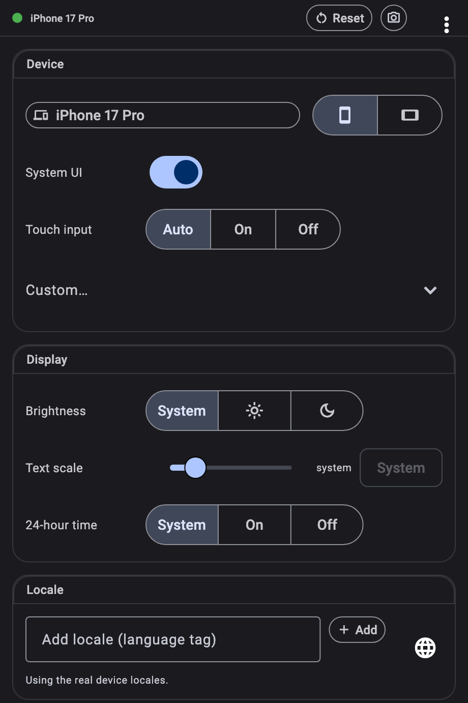

Switch your running Flutter app to an iPhone, an iPad in landscape or a 200%-text-scale Pixel — instantly, without a rebuild or a simulator. Screen size, safe areas, locale, brightness, text scale and accessibility all follow, so layout problems surface while you're still writing the layout.
On the left, a Flutter app compiled for the web. On the right, the same controls the DevTools extension gives you, rebuilt in HTML and talking to the app over postMessage instead of the VM service. The picker at the top of the panel swaps what runs inside the simulated device: the stock counter app, with nothing but a theme change and DevicePreview.enable(); a todo app with navigation, bottom sheets, dialogs and toasts; or the device lab, which shows off everything a simulation touches — labeled safe areas under the notch, a clock that follows the locale and the 24-hour toggle, a layout that splits around a foldable's hinge. Either way: pick a device, rotate it, push the text scale, and the app re-lays itself out live.
3.0 is a rewrite. Until now, device_preview was a widget: it sat at the root of your tree, injected a MediaQuery underneath itself, and drew its own control panel next to the simulated screen. That worked, but the simulation only existed below that widget — and it lived inside the app it was measuring. The idea is unchanged; everything under it has moved one layer down.
The simulation now lives in a custom WidgetsBinding, installed by one line before runApp. It wraps the engine's PlatformDispatcher and FlutterView, so screen size, pixel ratio, safe areas, orientation, locale, brightness, text scale and accessibility flags are simulated at the boundary the framework itself reads. Nothing is injected halfway down the tree, so MediaQuery.of is right everywhere — inside routes, dialogs and overlays — and code that reads View.of(context) or the dispatcher directly agrees with it. Pointer packets pass through the same seam, which is how your mouse can be delivered to the app as a finger. And because it is a binding rather than a widget, flutter_test can install it too — the same simulation, with no wrapper around the app.
That is what makes it solid. A wrapper can only simulate what sits below it, so an app effectively held two answers to the same question — the engine's and the injected one — and anything that read the wrong one, or that built its own MediaQuery from the view, quietly saw the real device. There is nothing to opt into now and nothing to remember: no builder: to thread through MaterialApp, no rule about staying under the wrapper, no widget that has to be first. And it is consistent by construction: metrics, safe areas, locale resolution, text scaling, accessibility flags and pointer routing all come through the one seam, so they cannot drift apart from each other, and every change travels the notification path the framework already uses for a real device — a rotation or a brightness switch is indistinguishable from the engine sending one. The simulation applies everywhere or nowhere; there is no half-simulated tree. It is also why a golden captured this way matches what the panel just showed you: the same code path, not a lookalike.
The controls moved to Flutter DevTools for the same reason. A panel that lives in your widget tree perturbs what it measures: it adds ancestors, competes for focus and theme, and takes screen away from the app you are trying to look at. Outside the tree, your app keeps the whole window and none of the control surface ships with it — the device frames live in the extension, and only the device you selected travels over the VM service. DevTools is already open beside a running Flutter app on every platform, so there is nothing to install and nothing to configure; and when you would rather script the same changes, the controller API and your tests reach them directly.
You build on one screen. Your users arrive on hundreds — a five-year-old phone with a 320pt-wide screen, a tablet in landscape, a desktop window dragged to half its width, a notched display, a fold.
Add one line to main() and every one of them is a keystroke away. The app you're already running re-lays itself out at the new size, with that device's safe areas, pixel ratio, locale, brightness, text scale and accessibility settings. No rebuild, no simulator boot, no cable.
Because your app reads the simulated values through the same MediaQuery it always used, the things that usually break in front of a customer — a clipped headline, a button under the home indicator, an overflow at 200% text — break in front of you, seconds after you write them.
void main() { DevicePreview.enable(); runApp(const MyApp()); // runs as usual — now simulatable }
Check the small phone, the tablet in landscape and the half-width desktop window in the time it takes to click three chips. Every screen in the catalog carries real metrics — resolution, pixel ratio and per-orientation safe areas — so what you see is what that hardware would show.
Notches, punch-holes, home indicators and hinges all move in. SafeArea, MediaQuery.padding and displayFeatures report the simulated device's values, so content that would hide under a cutout hides now — while you can still fix it.
Push text scale to 200%, switch to bold text or reduce motion, reorder locales, flip to dark mode — one panel, live, no device settings to dig through and no state to lose. The accessibility pass stops being a release-week scramble.
SafeArea and MediaQuery.padding respond.const data on the preset — only the devices you name are compiled in — and travels from the DevTools catalog when you pick one there.SystemUiOverlayStyle — so a status bar style is visible while you write it. One switch hides them.MediaQuery.viewInsets, so resizeToAvoidBottomInset and scroll-into-view behave exactly as they do on the phone.Intl date, number and currency formatting all follow.ThemeMode.system flips as you toggle.A device_preview tab appears in DevTools as soon as your app depends on the package — nothing to install, nothing to configure. Your screen stays entirely for the app you're designing.
Pick a device, rotate it, drag the text scale, flip brightness, reorder locales, toggle accessibility flags. The running app updates as you go, and it keeps its state: the screen you were on, the data you'd loaded, the form you'd half-filled are all still there.
Hot restart doesn't lose your setup. Turn on Keep across restarts and the panel puts your simulated device back the moment the app returns.

flutter pub add device_preview — no platform setup, no configuration file, nothing to register.runApp. That is the entire integration, and it is safe to leave in: simulation is active in debug and profile builds and completely off in release, where the binding behaves exactly like WidgetsFlutterBinding.import 'package:device_preview/device_preview.dart'; void main() { DevicePreview.enable(); // debug + profile only runApp(const MyApp()); }
final c = DevicePreview.controller; // full preset, orientation included await c.applyPreset(DevicePresets.iPhone16Pro); await c.setOrientation(Orientation.landscape); // partial overrides, merged over the real device await c.update((s) => s.copyWith( textScaleFactor: 2.0, platformBrightness: Brightness.dark, )); // back to reality await c.reset();
void main() { final binding = TestDevicePreviewBinding.ensureInitialized(); testWidgets('lays out like an iPhone 16', (tester) async { await binding.devicePreview! .applyPreset(DevicePresets.iPhone16); await tester.pumpWidget(const MyApp()); // MediaQuery: 393×852 @3x, iPhone 16 safe areas. }); }
The same simulation is available to flutter_test and integration_test, so a widget test can assert that a screen fits a small phone, or that nothing overflows at 200% text — and goldens can be captured for a whole matrix of devices in CI, without a device in sight. Presets ship in a separate import, so the ones you never reference are dropped from your build.